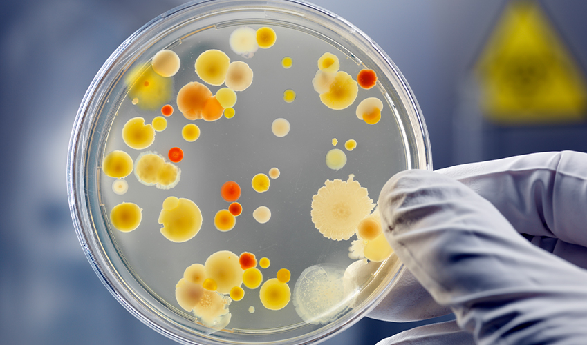
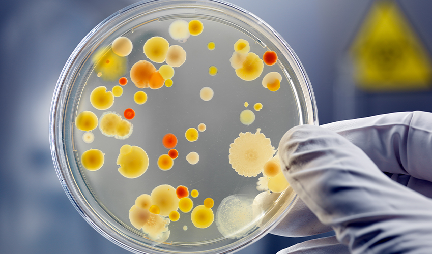

A Anatomia Patológica é uma disciplina que estuda as alterações morfológicas das células e tecidos, relacionadas a doenças. Ela é fundamental para o diagnóstico e prognóstico de diversas enfermidades.
A Microbiologia é o ramo da biomedicina que estuda os microrganismos, como bactérias, vírus e fungos, e sua interação com o meio ambiente e organismos. Essa disciplina é essencial para compreender doenças infecciosas e desenvolver métodos de prevenção.
 
